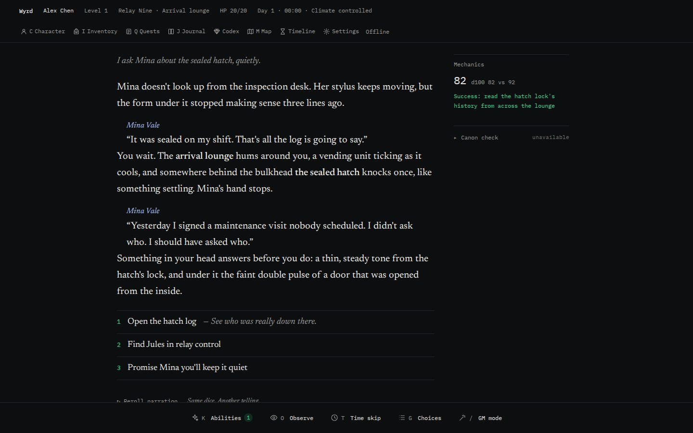
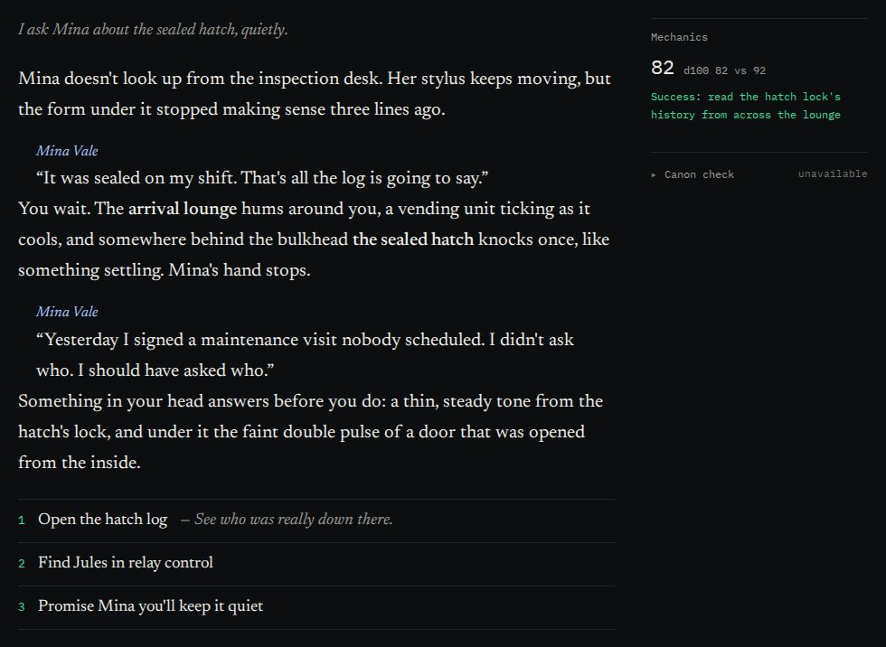
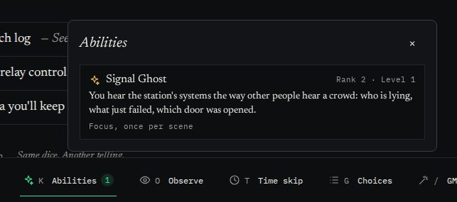
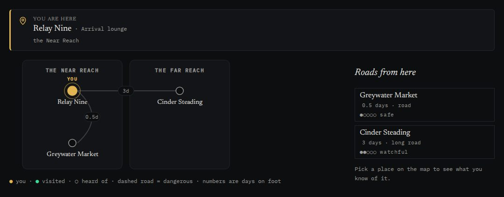
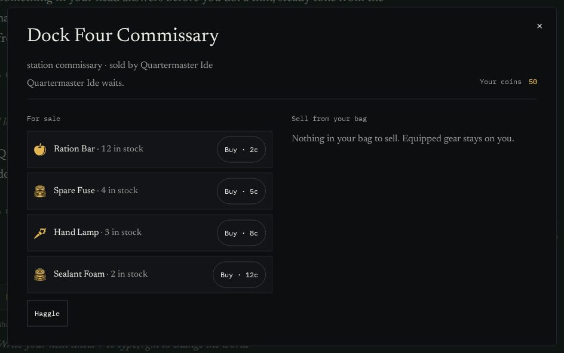
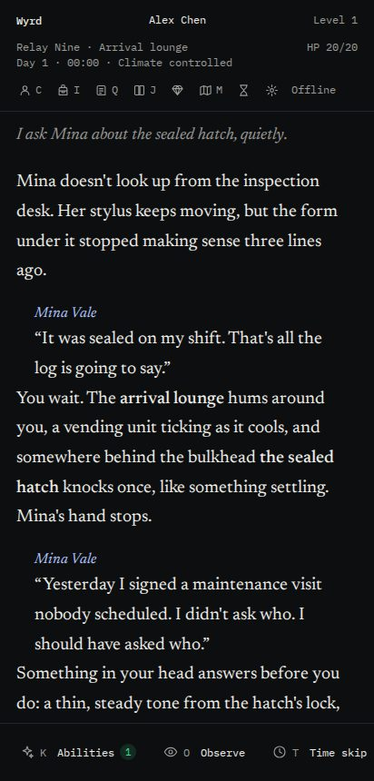
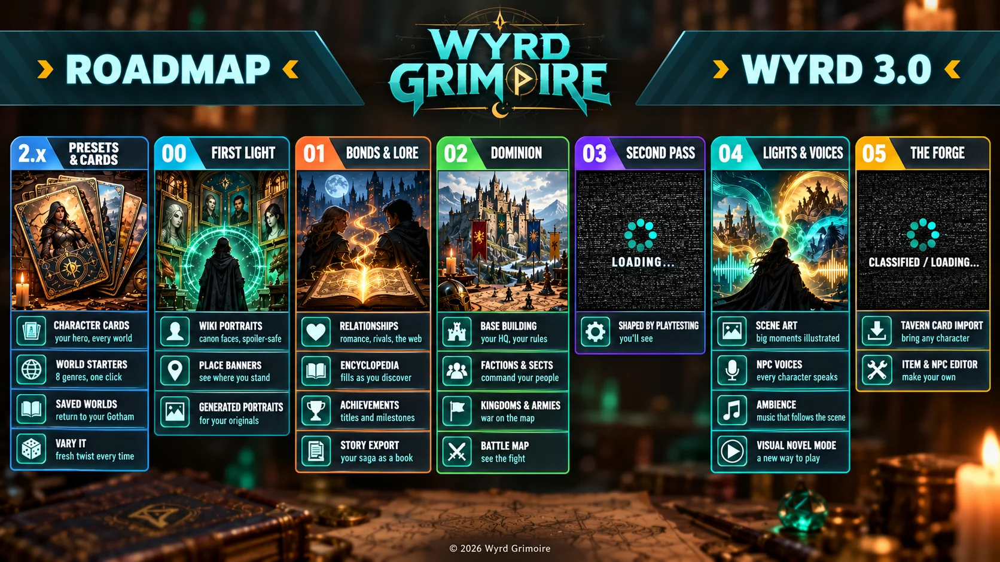

"Wait, I had a ring?"
Everything is on the record
Items, wounds, coins, quests and what each NPC knows are events in a log. The GM can only change them through tools, and you can rewind any turn.
Wyrd Grimoire 2.0
A free RPG engine you run on your own PC. A GM model tells the story; code keeps the rules, your sheet, every item and every NPC's memory, so nothing quietly disappears on turn forty.

ChatGPT tells a great story. Then it forgets your sword, fudges your dice and loses the plot. Wyrd keeps the record.
Why not just a chat window
"Wait, I had a ring?"
Items, wounds, coins, quests and what each NPC knows are events in a log. The GM can only change them through tools, and you can rewind any turn.
"It just decided I won"
Uncertain moments roll on the engine's seeded dice, d100 or d20, and the math sits in the margin. The narrator describes the result. It never picks it.
"Paste the recap again"
Canon characters follow their own goals, factions push their plans and time can skip a day or a year. The world is still there when you come back.
What's new in 2.0
2.0 rebuilt the turn around a game master that uses tools, then added the things long campaigns need.
The GM writes the prose and calls the engine for everything that matters.
/gm to rewrite the world, with an Undo card
Ranked abilities the GM grants as you grow, Level gaps that decide who can even contest whom, and a sovereign at Level ∞ who can seal their power or send a finite avatar into the world.

Start an original world, or one inside a source like a comic universe or a web novel. Wyrd researches it from its wiki, keeps the summaries, and schedules canon events that happen on time unless you get in the way.

Ask around for supplies and the GM opens a vendor right there, with stock that fits the place. Walk away and the shop stays behind. Things you wrote into your character are never for sale.

The server lives on the machine with your models. Play from any browser on your network or over Tailscale, in one of three layouts: Reader, Cockpit or Chat.

Skip a day or a season. The world simulates every day, and anyone you watch sends a report.
A companion who stays, speaks in the voice you gave them, and takes on tasks while you do something else.
Paste ChatGPT share links and keep the character, companions and history worth keeping.
Get started
You need Bun and the source from GitHub.
git clone https://github.com/EarthyPunyapat/wyrd-grimoire
cd wyrd-grimoire
bun install && bun run buildSign in with your ChatGPT plan, add a DeepSeek key, or point it at a local model.
bun run start
# or try it with no models at all
bun run start --offline
Open localhost:4777, set a passcode, and begin. Your laptop and phone join over your
network.
What's next
Seven updates, planned in the open. Nothing here has a date; each one ships when it plays well.

Questions
Yes. It's open source under the MIT licence. The models are yours: your ChatGPT plan, your own API key, or a model running on your machine.
Not for the ChatGPT route: you sign in with your own ChatGPT account and the tokens stay in a secrets folder on your PC. DeepSeek and other compatible servers take a key. Ollama needs only a model on disk.
Not for text. With ChatGPT or DeepSeek the heavy lifting happens on their side. A GPU matters for local models now and for generated portraits when First Light arrives.
Yes. The server runs on your PC and serves the game to any browser on your network or over Tailscale. A passcode keeps it yours.
Paste your share links during creation. Wyrd drafts your character, companions and the history worth keeping, and you tick what to carry over.
By default defeat is not death: you are captured, robbed, left for dead or rescued, and the story goes on from there. Hardcore mode makes death permanent, with an obituary and a new life in the same world.
On your machine, one file per campaign with automatic backups. Nothing is sent anywhere except the model calls you configure.
2.0's features are built and covered by hundreds of tests, and it's being played in long campaigns now. It's a personal project in active development, so expect rough edges and frequent updates.
Install it tonight. Roll your first check before the kettle boils.